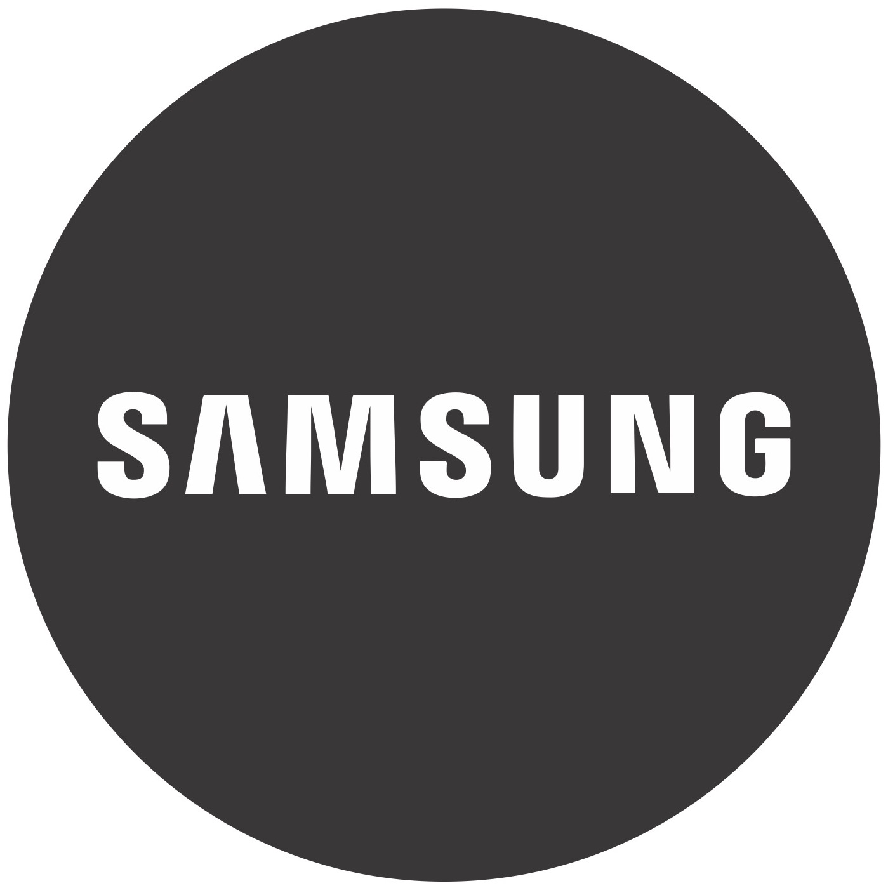

Hello, I am Aqeel! ()
A husband, a father and a travel enthusiast. I am a Senior Machine Learning Engineer at NVIDIA working in the Autonomous Vehicle domain. A proud Yellow Jacket (Georgia Tech) with a Doctoral degree(#ToHellWithGeorgia) who likes to write about machine learning @Medium. If I were not an Engineer, I would have been an Architect. I am fascinated by skyscraper designs and like to build small-scale paper models of them. I love to travel. I have been to over 18 countries, 3 continents, and 25 US States.
Current/Past Affiliations
NVIDIA

Samsung
Georgia Tech
Fulbright